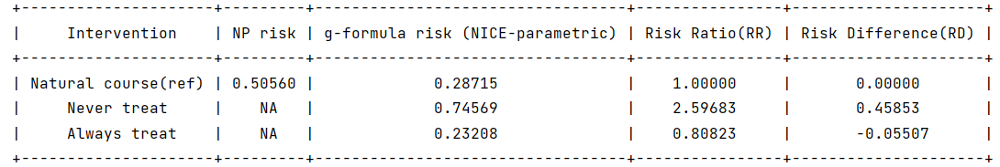
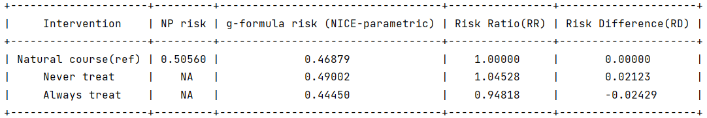
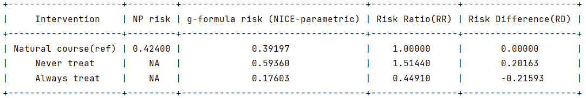

Deterministic knowledge
When there are known deterministic knowledge, they can be incorporated into the g-formula algorithm to avoid unnecessary extrapolation. The package allows users to apply restrictions of the deterministic knowledge on the covariates, outcome or competing event.
Restrictions on covariates
When incorporating the deterministic knowledge of one time-varying covariate Z, the estimation is changed as follows:
1. In step 1 of the algorithm, restrict the chosen method of estimating the mean of Z given “history” to only records where deterministic knowledge is absent.
2. In step 2 of the algorithm, set Z deterministically to its known value for histories under which this value is known. Otherwise, draw Z according to the model-based estimate conditional distribution of Z.
For example, when there are two time-varying covariates, one indicator of whether an individual has started menopause by a given interval k (menopause), and another indicator of whether she is pregnant in interval k (pregnancy). The deterministic knowledge is that given menopause == 1, the probability that pregnancy == 0 is 1. In the first estimation step, only records with menopause == 0 are used for model estimation of pregnancy. Then in the second simulation step, if the value of menopause in step 1 at time k is 1 then pregnancy is set to 0. Otherwise, the value of pregnancy at time k is drawn from the estimated distribution in step 1.
The package allows deterministic knowledge incorporation for covariates by the argument ‘‘restrictions’’:
Arguments |
Description |
|---|---|
restrictions |
(Optional) List of lists. Each inner list contains its first entry the covariate name of that its deterministic knowledge is known; its second entry is a dictionary whose key is the conditions which should be True when the covariate is modeled, the third entry is the value that is set to the covariate during simulation when the conditions in the second entry are not True. |
Note that for each restricted covariate and its conditional covariates, they need to follow the same order in ‘‘covnames’’, i.e., the restricted covariate should be after its conditional covariates.
An example of the restrictions that encodes the relationship between menopause and pregnancy above:
restrictions = [['pregnancy', {'menopause': lambda x: x == 0}, 1]]
g = ParametricGformula(..., restrictions = restrictions, ...)
Sample syntax:
An example with one deterministic knowledge conditions for one covariate ‘L2’: if L1 equals 0, L2 is estimated by its parametric model, otherwise, it is set to a known value 0.5.
restrictions = [['L2', {'L1': lambda x: x == 0}, 0.5]]
g = ParametricGformula(..., restrictions = restrictions, ...)
An example with multiple deterministic knowledge conditions for one covariate ‘A’: if L1 equals 0 and L2 is greater than 0.5, A is estimated by its parametric model, otherwise, it is set to a known value 1.
restrictions = [['A', {'L1': lambda x: x == 0, 'L2': lambda x: x > 0.5}, 1]]
g = ParametricGformula(..., restrictions = restrictions, ...)
An example with multiple restrictions, one for covariate L2 and one for covariate A:
restrictions = [['L2', {'L1': lambda x: x == 0}, 0.5], ['A', {'L1': lambda x: x == 0, 'L2': lambda x: x > 0.5}, 1]]
g = ParametricGformula(..., restrictions = restrictions, ...)
If the assigned value of the covariate is not a static value, but determined by a user-specified function, the ‘‘restrictions’’ allows an input as a function type. In this case, the third entry for a restriction is a function instead of a value.
For each custom restriction function, the input should be the parameters (not necessary to use all):
new_df: A DataFrame that contains the observed or simulated data at time t.
pool: A DataFrame that contains the observed or simulated data up to time t.
time_name: A string specifying the name of the time variable in pool.
t: An integer specifying the current time index.
The function output should be a list of values that users wish to assign for the restricted covariate at time t. The package will automatically assign these values for records that are not restricted by the conditions.
An example with one deterministic knowledge condition for covariate L2: if L1 equals 0, L2 is estimated by its parametric model, otherwise, its previous value is carried forward.
def carry_forward(new_df, pool, time_name, t):
assigned_values = pool.loc[pool[time_name] == t-1, 'L2']
return assigned_values
restrictions = [['L2', {'L1': lambda x: x == 0}, carry_forward]]
g = ParametricGformula(..., restrictions = restrictions, ...)
Running example [code]:
import numpy as np
import pygformula
from pygformula.parametric_gformula.interventions import static
from pygformula import ParametricGformula
from pygformula.data import load_basicdata_nocomp
obs_data = load_basicdata_nocomp()
time_name = 't0'
id = 'id'
covnames = ['L1', 'L2', 'A']
covtypes = ['binary', 'normal', 'binary']
covmodels = ['L1 ~ lag1_L1 + lag1_A',
'L2 ~ L1 + lag1_L2',
'A ~ L1 + L2']
basecovs = ['L3']
outcome_name = 'Y'
ymodel = 'Y ~ L1 + L2 + A'
# define interventions
time_points = np.max(np.unique(obs_data[time_name])) + 1
int_descript = ['Never treat', 'Always treat']
restrictions = [['L2', {'L1': lambda x: x == 0}, 0.5], ['A', {'L1': lambda x: x == 0, 'L2': lambda x: x > 0.5}, 1]]
g = ParametricGformula(obs_data = obs_data, id = id, time_name=time_name,
time_points = time_points,
int_descript = int_descript,
Intervention1_A = [static, np.zeros(time_points)],
Intervention2_A = [static, np.ones(time_points)],
covnames=covnames, covtypes=covtypes,
covmodels=covmodels, basecovs=basecovs,
restrictions=restrictions, outcome_name=outcome_name,
ymodel=ymodel, outcome_type='survival')
g.fit()
Output:

Restrictions on outcome
When there is deterministic knowledge of the outcome variable Y, the package offers the argument ‘‘restrictions’’ to incorporate the knowledge:
Arguments |
Description |
|---|---|
yrestrictions |
(Optional) List of lists. For each inner list, its first entry is a dictionary whose key is the conditions which should be True when the outcome is modeled, the second entry is the value that is set to the outcome during simulation when the conditions in the first entry are not True. |
Sample syntax:
An example with one deterministic knowledge conditions for outcome Y: if L1 equals 0, the probability of outcome Y is estimated by its parametric model, otherwise, it is set to value 1.
yrestrictions = [[{'L1': lambda x: x == 0}, 1]]
g = ParametricGformula(..., yrestrictions = yrestrictions, ...)
An example with multiple restrcitions for outcome Y: if L1 equals 0, the probability of outcome Y is estimated by its parametric model, otherwise, it is set to a value 0; if L2 is greater than 0.5, the probability of outcome Y is estimated by its parametric model, otherwise, it is set to a value 0.1;
yrestrictions = [[{'L1': lambda x: x == 0}, 0], [{'L2': lambda x: x > 0.5}, 0.1]]
g = ParametricGformula(..., yrestrictions = yrestrictions, ...)
Running example [code]:
import pygformula
from pygformula import ParametricGformula
from pygformula.parametric_gformula.interventions import static
from pygformula.data import load_basicdata_nocomp
obs_data = load_basicdata_nocomp()
time_name = 't0'
id = 'id'
covnames = ['L1', 'L2', 'A']
covtypes = ['binary', 'normal', 'binary']
covmodels = ['L1 ~ lag1_L1 + lag1_A',
'L2 ~ L1 + lag1_L2',
'A ~ L1 + L2']
basecovs = ['L3']
outcome_name = 'Y'
ymodel = 'Y ~ L1 + L2 + A'
# define interventions
time_points = np.max(np.unique(obs_data[time_name])) + 1
int_descript = ['Never treat', 'Always treat']
yrestrictions = [[{'L1': lambda x: x == 0}, 0], [{'L2': lambda x: x > 0.5}, 0.1]]
g = ParametricGformula(obs_data = obs_data, id = id, time_name=time_name,
time_points = time_points,
int_descript = int_descript,
Intervention1_A = [static, np.zeros(time_points)],
Intervention2_A = [static, np.ones(time_points)],
covnames=covnames, covtypes=covtypes, covmodels=covmodels, basecovs=basecovs,
yrestrictions=yrestrictions, outcome_name=outcome_name,
ymodel=ymodel, outcome_type='survival')
g.fit()
Output:

Restrictions on competing event
When there is a competing event D and there is known deterministic knowledge of the competing event, the package offers the argument ‘‘compevent_restrictions’’ for incorporation:
Arguments |
Description |
|---|---|
compevent_restrictions |
(Optional) List of lists. For each inner list, its first entry is a dictionary whose key is the conditions which should be True when the competing event is modeled, the second entry is the value that is set to the competing event during simulation when the conditions in the first entry are not True. Only applicable for survival outcomes. |
Sample syntax:
An example with one deterministic knowledge conditions for competing event D: if L1 equals 0, the probability of competing event is estimated by its parametric model, otherwise, it is set to a value 1.
compevent_restrictions = [{'L1': lambda x: x == 0}, 1]
g = ParametricGformula(..., compevent_restrictions = compevent_restrictions, ...)
An example with multiple restrictions for competing event D: if L1 equals 0, the probability of competing event is estimated by its parametric model, otherwise, it is set to a value 1; if L2 is greater than 0.5, the probability of competing event is estimated by its parametric model, otherwise, it is set to a value 0.1;
compevent_restrictions = [[{'L1': lambda x: x == 0}, 0], [{'L2': lambda x: x > 0.5}, 0.1]]
g = ParametricGformula(..., compevent_restrictions = compevent_restrictions, ...)
Running example [code]:
import pygformula
from pygformula import ParametricGformula
from pygformula.parametric_gformula.interventions import static
from pygformula.data import load_basicdata
obs_data = load_basicdata()
covnames = ['L1', 'L2', 'A']
covtypes = ['binary', 'bounded normal', 'binary']
covmodels = ['L1 ~ lag1_A + lag2_A + lag_cumavg1_L1 + lag_cumavg1_L2 + L3 + t0',
'L2 ~ lag1_A + L1 + lag_cumavg1_L1 + lag_cumavg1_L2 + L3 + t0',
'A ~ lag1_A + L1 + L2 +lag_cumavg1_L1 + lag_cumavg1_L2 + L3 + t0']
outcome_model = 'Y ~ A + L1 + L2 + L3 + lag1_A + lag1_L1 + lag1_L2'
time_name = 't0'
id = 'id'
outcome_name = 'Y'
basecovs = ['L3']
compevent_name = 'D'
compevent_model = 'D ~ A + L1 + L2 + L3 + t0'
compevent_cens = False
time_points = np.max(np.unique(obs_data[time_name])) + 1
int_descript = ['Never treat', 'Always treat']
compevent_restrictions = [[{'L1': lambda x: x == 0}, 0], [{'L2': lambda x: x > 0.5}, 0.1]]
g = ParametricGformula(obs_data = obs_data, id = id, time_points = time_points,
time_name=time_name, int_descript = int_descript,
Intervention1_A = [static, np.zeros(time_points)],
Intervention2_A = [static, np.ones(time_points)],
basecovs =basecovs, covnames=covnames,
covtypes=covtypes, covmodels=covmodels,
compevent_restrictions = compevent_restrictions,
compevent_cens= compevent_cens, compevent_name = compevent_name,
compevent_model=compevent_model, outcome_name=outcome_name,
outcome_type='survival', ymodel=ymodel)
g.fit()
Output:
